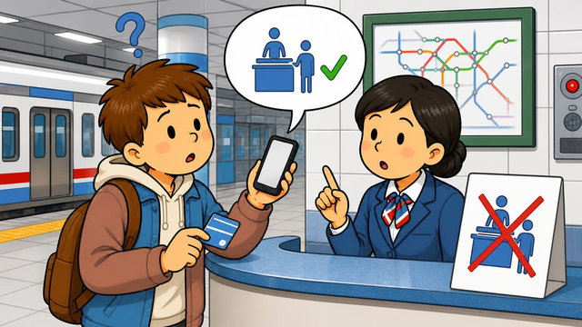

우리나라 어느 도시의 지하철 안내 챗봇에 아래와 같이 질문했다.
교통카드 잔액은 어디서 환불할 수 있어?
11월 22일 현재 답변은 아래와 같다.
XX페이(교통카드) 잔액은 역 내 고객안내센터(고객안내기)에서 환불 요청이 가능합니다.
하지만 실제는 아니다. 홈페이지에는 빨간 글씨로 "공사는 교통카드 잔액 환불업무를 취급하지 않음"이라고 써 있다. 편의점에 가야 한다.

요즘 챗봇에 질문을 던지면 대부분 답을 잘한다. 하지만 답이 있는 문서를 못 찾거나, 대체로 맞는 답에 틀린 조건이 하나 섞이거나, 예전 규정을 알려주는 경우가 있을 수 있다.
AI는 실수를 할 수 있다지만 고객은 관심이 없다. 자신이 물어본 질문에 제대로 답했는지가 중요할 뿐이다. 특히 잘못된 안내를 믿고 행동했다면 그 한 번의 실수가 서비스 전체에 대한 불신으로 이어질 수 있다.
질문 100개 중 98개를 맞히더라도 틀린 두 개가 예를 들어 하루 문의의 10%라면 정확도는 98%가 아니라 90%가 된다.
AI의 오류는 어디를 봐야 할까?
내가 챗봇 담당자라고 하자. 오류가 있는지는 어디를 봐야 할까?
챗봇이 일반적인 RAG 방식(관련 문서나 자료를 AI 기반으로 찾고 처리하는 방식)이라면 우선 어떤 자료를 넘겼는지 봐야 한다. 새 자료를 올렸는데 아직 반영이 안 된 거라면 문서 갱신 과정을 확인해야 한다. 검색 설정, 답변 모델의 지시문(프롬프트) 등을 확인해야 할 수도 있다.
입력부터 출력까지 단선적인 데이터 흐름 같지만 오류가 끼어들어갈 여지는 참 다양하다. 원천 데이터 자체의 오류, 데이터 갱신의 문제, 데이터 구조의 문제, RAG 적용상의 문제 등.
챗봇도 그렇지만 사진 분류 모델 예를 보자. 이 AI 시스템은 분류 유형별로 많은 사진 자료를 학습시켜야 한다. 그런데 새로운 사진이 들어온다면? 예를 들어 차량을 구별하는 모델이라 우리나라에서 흔한 차량 사진을 학습시켰는데 새로운 수입 차량이 많아졌다든가 야간 사진이 늘어난다든가 하면 정확도가 떨어질 수 있다. 시간에 따른 AI 품질 저하는 피하기 어렵다. 다른 경우지만 난 이런저런 이유로 지난 프로젝트에서 사진 수천 장을 여러 번 다시 봤다.
일반 업무 시스템에서도 원인을 찾다 보면 데이터까지 확인할 때가 있다. AI 시스템에서는 코드나 모델에 문제가 없어도 참고하는 문서가 달라지거나 예전과 다른 사진이 많이 들어오면서 답이 틀릴 수 있다. 그래서 배포할 때마다 테스트하는 것과 별개로 운영 중에도 실제로 어떤 답이 나가는지 계속 봐야 한다.
뭘 계속 지켜봐야 할까?
규정을 안내하는 챗봇이라면 최신 문서가 검색되는지, 찾은 문서가 답변의 근거가 맞는지, 답변이 지금 적용하는 규정과 맞는지 확인해야 할 것이다. 예전 자료를 그대로 옮겼다면 문서에 근거해서 답한 건 맞지만 지금 고객에게는 틀린 안내다. 사진 분류는 전체 정확도에 더해 야간 사진처럼 특정 조건에서 찍은 사진을 얼마나 잘 맞히는지도 봐야 할 수 있다. AI의 판단이 사람에게 영향을 주는 업무에서는 특정 집단에서 오판이 더 많이 나오는지, 잘못된 판단이 큰 피해로 이어질 수 있는 경우 어떻게 대응할지도 봐야 한다.
그래서 우리나라를 비롯해 여러 나라가 AI 시스템의 안전성에 대한 점검, 모니터링 체계를 요구한다. 예: 인공지능기본법 제32조 및 관련 규정들
앞서 예를 든 지하철 운임이나 환불을 안내하는 챗봇이라면 아래 같은 점검을 해보는 게 좋다.
- 배포 전에 자주 묻는 질문을 다시 해본다. 자주 들어오는 질문, 최근 바뀐 항목처럼 중요도가 높은 질문을 모아 챗봇이 어떤 답을 해야 하는지 적어둔다. 챗봇에 따라서는 상담원 연결이나 콜센터 안내도 포함될 수 있다. 이렇게 질문을 테스트하여 전에 잘 답하던 걸 계속 잘 답하는지 확인한다. (이게 회귀 테스트다.)
- 실제로 응답한 내용을 남겨야 한다. 나중에 답이 왜 그렇게 나왔는지 보려면 질문과 답변 외에 어떤 버전의 문서를 근거로 답했는지도 남겨둬야 한다. 모든 걸 모니터링할 수는 없으므로 일부 대화를 무작위로 뽑아 정기적으로 보고 최근에 규정이 바뀐 항목이라든가 사용자가 신고한 답변은 따로 챙겨보도록 한다.
- 틀렸던 질문을 다음 테스트에 넣는다. 예전 안내문 때문에 환불 조건을 잘못 알려줬다면 최신 문서가 검색되도록 고치는 건 기본이다. 고친 뒤에는 이 질문을 테스트에 넣어 다음에 검색 설정을 바꿨을 때 다시 틀리지 않는지 확인한다.
챗봇이 어떤 문서를 근거로 했는지 기록으로 남겨두면 나중에 답변과 나란히 놓고 볼 수 있다. LangSmith나 MLflow의 생성형 AI 기능을 쓰면 이 기록을 남기고 가져온 문서에 답변의 근거가 있는지도 자동으로 평가할 수 있다. 예전 규정을 가져왔다면 답변이 그 문서와 맞더라도 최신 규정과 맞는지는 따로 확인해야 한다. LangSmith 평가 문서 · MLflow RAG 평가 문서
아직 직접 써보진 않았지만 요즘 들어오는 데이터가 예전과 달라졌는지 보려면 Evidently 같은 도구를 쓸 수 있다고 한다. 사진 분류 모델에 요즘 야간 사진이 많이 들어온다는 걸 알게 됐다면 그 사진을 일부 뽑아서 사람이 붙인 정답과 모델의 분류 결과를 비교해볼 수 있다. Evidently 데이터 드리프트
점검과 별개로 오류에 대한 안전장치를 두는 것도 필요하다. 답변에 근거 문서 링크와 기준일을 함께 보여주거나 확신이 낮은 질문은 상담원 연결로 넘기는 식이다.
코딩은 빨라져도 시간이 더 걸리는 것
AI로 인해 코딩이 빨라지고 원하는 결과물을 빨리 얻는 것 같지만 그게 다일까? 요즘은 코딩 도구에 챗봇을 만들어달라고 하면 (옛날보다는 훨씬) 빨리 될 정도로 AI 코딩 성능이 좋다.
그런데 잔액 환불 규정이 바뀌었다면 AI가 그걸 알고 자동으로 고쳐주는 시스템이 돼 있을까? 대부분의 업무는 사람의 개입이 필요하다. 오류를 발견하는 걸 사람이 일일이 해야 한다면 시간과 노력이 훨씬 더 필요할 것이다.
챗봇을 만든 팀은 업무 규정의 직접적인 담당자가 아니므로 오류를 직접 알기 쉽지 않다. 규정 안내가 잘못 나간 건 상담팀이 먼저 알 수 있지만 챗봇이 어떤 근거 문서를 가지고 있었는지는 보통 개발팀에 물어봐야 한다. 이런 일련의 과정이 시스템까지 반영되는 걸 자동화하지 않으면 시간은 계속 흘러간다.
AI 시스템의 품질, 안전성 점검과 그에 따른 수정, 보완은 일이 생기면 그때그때 대응할 일이 아니다. 챗봇이 교통카드 잔액 환불을 잘못 안내하고 있는 걸 언제까지 방치할까 궁금하다.
댓글
댓글을 불러오는 중입니다.